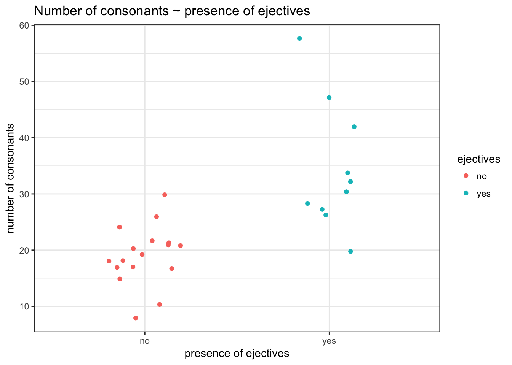
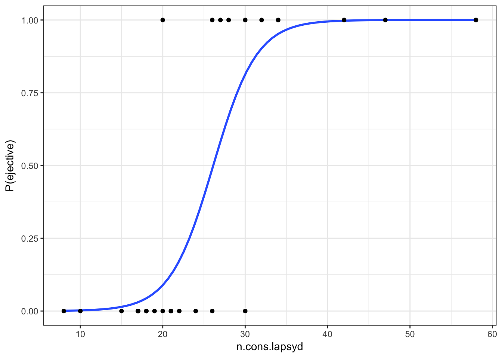
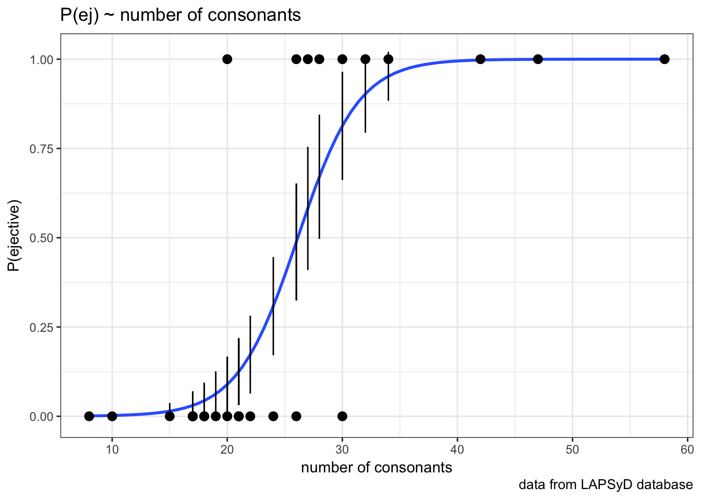
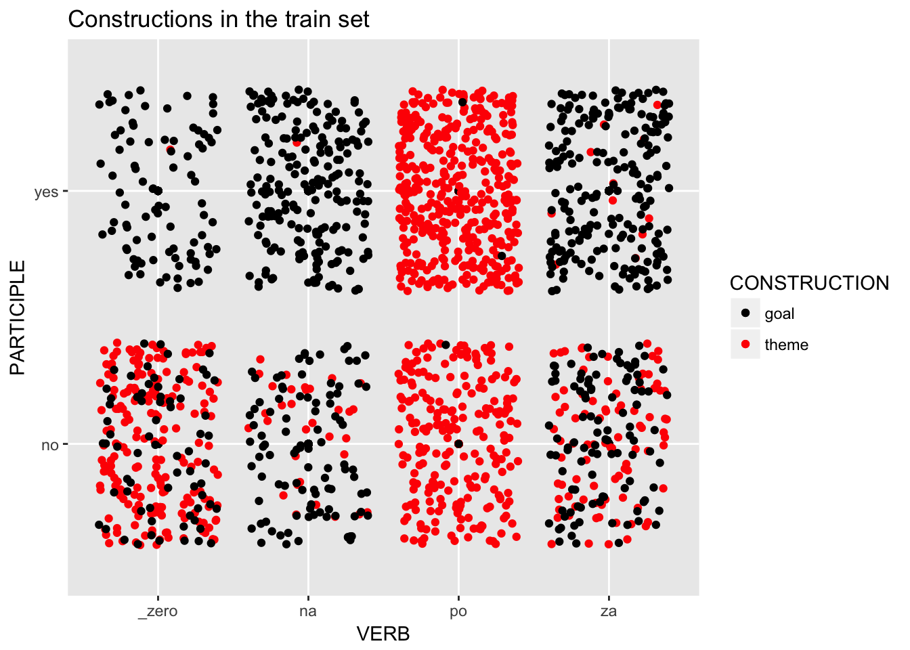
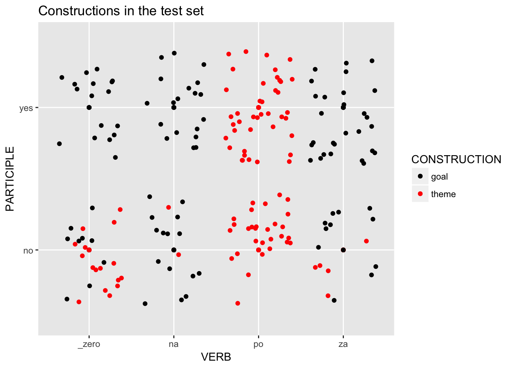
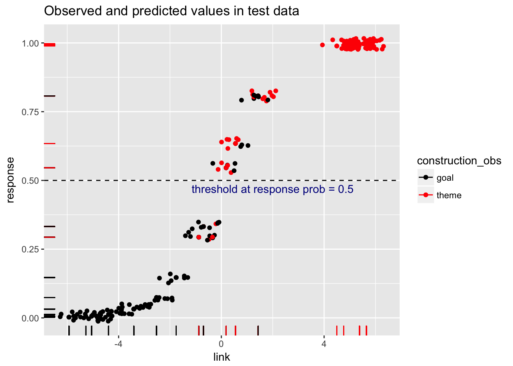
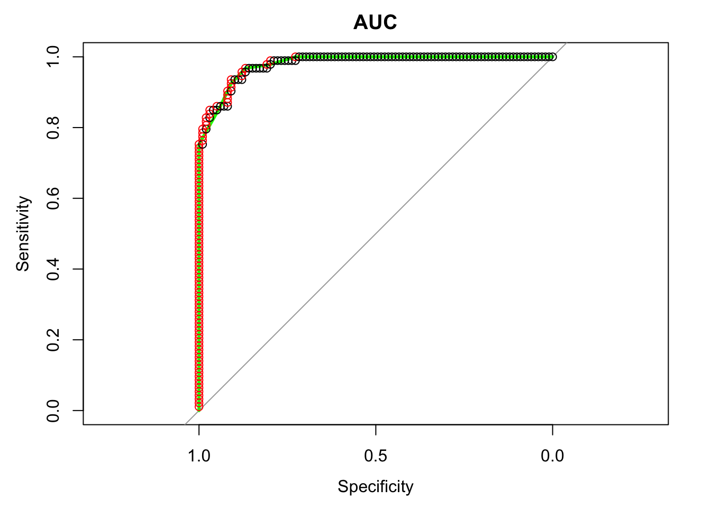

Lab 10. Binary logistic regression
Libraries
library(tidyverse)
library(stats) # glm() function for logit regression models
library(caret) # library to calculate confusion matrix and agreement
library(pROC) # library to draw ROC curves1 Logit model with one numeric predictor
It is interesting to know whether the languages with ejective sounds have in average more consonants. So we collected data from phonological database LAPSyD: http://goo.gl/0btfKa.
1.1 Data summary
ej_cons <- read.csv("https://agricolamz.github.io/2018-MAG_R_course/data/correlation_regressions_ejectives.csv")
ej_cons %>%
ggplot(aes(ejectives, n.cons.lapsyd, color = ejectives))+
geom_jitter(width = 0.2)+
labs(title = "Number of consonants ~ presence of ejectives",
x = "presence of ejectives",
y = "number of consonants")+
theme_bw()
1.2 Model without predictors
fit1 <- glm(ejectives~1, data = ej_cons, family = "binomial")
summary(fit1)##
## Call:
## glm(formula = ejectives ~ 1, family = "binomial", data = ej_cons)
##
## Deviance Residuals:
## Min 1Q Median 3Q Max
## -0.9619 -0.9619 -0.9619 1.4094 1.4094
##
## Coefficients:
## Estimate Std. Error z value Pr(>|z|)
## (Intercept) -0.5306 0.3985 -1.331 0.183
##
## (Dispersion parameter for binomial family taken to be 1)
##
## Null deviance: 35.594 on 26 degrees of freedom
## Residual deviance: 35.594 on 26 degrees of freedom
## AIC: 37.594
##
## Number of Fisher Scoring iterations: 4How we get this estimate value?
table(ej_cons$ejectives)##
## no yes
## 17 10log(10/17)## [1] -0.5306283What does this model say? This model says that if we have no predictors and take some language it has \(\frac{0.5306283}{(1+e^{-0.5306283})} = 0.3340993\) probability to have ejectives.
1.3 Model with numeric predictor
fit2 <- glm(ejectives~n.cons.lapsyd, data = ej_cons, family = "binomial")
summary(fit2)##
## Call:
## glm(formula = ejectives ~ n.cons.lapsyd, family = "binomial",
## data = ej_cons)
##
## Deviance Residuals:
## Min 1Q Median 3Q Max
## -1.8317 -0.4742 -0.2481 0.1914 2.1997
##
## Coefficients:
## Estimate Std. Error z value Pr(>|z|)
## (Intercept) -9.9204 3.7699 -2.631 0.0085 **
## n.cons.lapsyd 0.3797 0.1495 2.540 0.0111 *
## ---
## Signif. codes: 0 '***' 0.001 '**' 0.01 '*' 0.05 '.' 0.1 ' ' 1
##
## (Dispersion parameter for binomial family taken to be 1)
##
## Null deviance: 35.594 on 26 degrees of freedom
## Residual deviance: 16.202 on 25 degrees of freedom
## AIC: 20.202
##
## Number of Fisher Scoring iterations: 6What does this model say? This model says:
\[\log(odds(ej)) = \beta_o + \beta_1 \times n.cons.lapsyd = -9.9204 + 0.3797 \times n.cons.lapsyd\]
Lets visualize our model:
ej_cons %>%
mutate(`P(ejective)` = as.numeric(ejectives) - 1) %>%
ggplot(aes(x = n.cons.lapsyd, y = `P(ejective)`))+
geom_smooth(method = "glm", method.args = list(family = "binomial"), se = FALSE) +
geom_point()+
theme_bw()
So probability for a language that have 30 consonants will be \[\log(odds(ej)) = -9.9204 + 0.3797 \times 30 = 1.4706\]
\[P(ej) = \frac{1.47061}{1+1.4706}=0.8131486\]
1.4 predict()
new.df <- data.frame(n.cons.lapsyd = c(30, 55, 34, 10))
predict(fit2, new.df) # odds## 1 2 3 4
## 1.470850 10.963579 2.989686 -6.123334predict(fit2, new.df, type = "response") # probabilities## 1 2 3 4
## 0.813186486 0.999982679 0.952106011 0.002186347predict(fit2, new.df, type = "response", se.fit = TRUE) # probabilities and confidense interval## $fit
## 1 2 3 4
## 0.813186486 0.999982679 0.952106011 0.002186347
##
## $se.fit
## 1 2 3 4
## 1.512886e-01 7.882842e-05 6.869366e-02 5.038557e-03
##
## $residual.scale
## [1] 1So we actually can create a plot with confidense intervals.
ej_cons_ci <- cbind.data.frame(ej_cons, predict(fit2, ej_cons, type = "response", se.fit = TRUE)[1:2])
ej_cons_ciej_cons_ci %>%
mutate(`P(ejective)` = as.numeric(ejectives) - 1) %>%
ggplot(aes(x = n.cons.lapsyd, y = `P(ejective)`))+
geom_smooth(method = "glm", method.args = list(family = "binomial"), se = FALSE)+
geom_point() +
geom_pointrange(aes(x = n.cons.lapsyd, ymin = fit - se.fit, ymax = fit + se.fit))+
labs(title = "P(ej) ~ number of consonants",
x = "number of consonants",
caption = "data from LAPSyD database")+
theme_bw()
2. Choice betweeen two constructions in Russian
The Russian verb gruzit’ `load’ is special for three reasons. First, this verb has two syntactic constructions it can appear in, second, it has three perfective counterparts with the prefixes NA-, PO-, and ZA- that do not add to its lexical meaning (and thus can be cosidered Natural Perfectives), and third all three Natural Perfectives can also use both constructions.
The two constructions that gruzit’ ‘load’ can appear in are called the ‘’THEME-object’‘construction and the’‘GOAL-object’‘construction, and this phenomenon is known in many languages as Locative Alternation. The names of the constructions come from the direct object that is marked with the accusative case. Let’s say that we have some boxes that we want to transport and a cart that we can use for this purpose. The boxes are the theme (the item that is put somewhere) and the cart is the goal (the place where the item is put). In the THEME-object construction the theme is the direct object, as in gruzit’ jaschiki.ACC na telegu ’load the boxes onto the cart’. The goal appears in a prepositional phrase in the theme-object construction, usually with the preposition na onto' or _v_into’. In the GOAL-object construction the goal is the direct object, as in gruzit’ telegu.ACC jaschikami ‘load the cart with boxes’. The theme in the GOAL-object construction often appears in the instrumental case as in our example: jaschikami with boxes'. _gruzit'_load’ uses not just one, but three prefixes to form Natural Perfectives: NA-, ZA-, and PO-. Collectively we call these four verbs (the simplex and the three Natural Perfectives) ‘’the ’load’ verbs’’. All three Natural Perfectives can appear in both the THEME-object and the GOAL-object constructions. Janda et al. 2013, chapter 4 explores whether the choice of prefix makes a difference in the distribution of the THEME-object and GOAL-object constructions. Along with the prefixes, they test whether the passive construction (ie. construction with passive participle) and omission of the prepositional phrase (ie. reduced construction) could motivate the choice between the THEME-object and GOAL-object constructions.
The dataset: There are 1920 lines of data, each corresponding to one of the examples extracted from the Russian National Corpus. The dataset includes four variables:
* CONSTRUCTION: This is our dependent variable, and it has two values, theme, and goal.
* VERB: This is an independent variable, and it has four values, \_zero (for the unprefixed verb gruzit’ ‘load’), na, za, and po (for the three prefixed variants).
* REDUCED: This is an independent variable, and it has two values, yes and no. This refers to whether the construction was reduced (yes) or full (no).
* PARTICIPLE: This is an independent variable, and it has two values, yes and no. This refers to whether the construction was passive (yes) or active (no).
Source: Trolling repository
2.1 Data summary
loaddata = read.csv('https://agricolamz.github.io/2018-MAG_R_course/data/loaddata.csv')
summary(loaddata)## CONSTRUCTION VERB REDUCED PARTICIPLE
## goal : 871 _zero:393 no :1353 no : 895
## theme:1049 na :368 yes: 567 yes:1025
## po :703
## za :4562.2 Formulate your hypothesis, what motivates the choice between two constructions?
2.3 Fit the simplest logistic regression model using VERB as the only factor.
# use glm() in the following way: fit <- glm(Dependent_variable ~ Factor_variable(s), family = binomial, data = ....)
load.glm <- glm(CONSTRUCTION ~ VERB, family=binomial, data=loaddata)
print(summary(load.glm))##
## Call:
## glm(formula = CONSTRUCTION ~ VERB, family = binomial, data = loaddata)
##
## Deviance Residuals:
## Min 1Q Median 3Q Max
## -3.3036 -0.7235 0.0925 0.0925 2.1692
##
## Coefficients:
## Estimate Std. Error z value Pr(>|z|)
## (Intercept) 0.1274 0.1011 1.260 0.208
## VERBna -2.3802 0.2044 -11.643 <2e-16 ***
## VERBpo 5.3251 0.5873 9.066 <2e-16 ***
## VERBza -1.3342 0.1503 -8.877 <2e-16 ***
## ---
## Signif. codes: 0 '***' 0.001 '**' 0.01 '*' 0.05 '.' 0.1 ' ' 1
##
## (Dispersion parameter for binomial family taken to be 1)
##
## Null deviance: 2645.2 on 1919 degrees of freedom
## Residual deviance: 1305.3 on 1916 degrees of freedom
## AIC: 1313.3
##
## Number of Fisher Scoring iterations: 82.4 Formulate the results of your analysis as text:
2.5 Add more factors to your model, one by one.
Note that we do not consider possible interactions here yet.
load.glm1 <- glm(CONSTRUCTION ~ VERB + REDUCED, family=binomial, data=loaddata)
print(summary(load.glm1))##
## Call:
## glm(formula = CONSTRUCTION ~ VERB + REDUCED, family = binomial,
## data = loaddata)
##
## Deviance Residuals:
## Min 1Q Median 3Q Max
## -3.16027 -0.63733 0.08946 0.08946 2.31723
##
## Coefficients:
## Estimate Std. Error z value Pr(>|z|)
## (Intercept) 0.3086 0.1132 2.727 0.006399 **
## VERBna -2.3906 0.2054 -11.636 < 2e-16 ***
## VERBpo 5.2104 0.5881 8.859 < 2e-16 ***
## VERBza -1.2673 0.1519 -8.343 < 2e-16 ***
## REDUCEDyes -0.5321 0.1445 -3.682 0.000231 ***
## ---
## Signif. codes: 0 '***' 0.001 '**' 0.01 '*' 0.05 '.' 0.1 ' ' 1
##
## (Dispersion parameter for binomial family taken to be 1)
##
## Null deviance: 2645.2 on 1919 degrees of freedom
## Residual deviance: 1291.5 on 1915 degrees of freedom
## AIC: 1301.5
##
## Number of Fisher Scoring iterations: 8load.glm2 <- glm(CONSTRUCTION ~ VERB + REDUCED + PARTICIPLE, family=binomial, data=loaddata)
print(summary(load.glm2))##
## Call:
## glm(formula = CONSTRUCTION ~ VERB + REDUCED + PARTICIPLE, family = binomial,
## data = loaddata)
##
## Deviance Residuals:
## Min 1Q Median 3Q Max
## -3.9999 -0.2447 0.0173 0.1116 3.0746
##
## Coefficients:
## Estimate Std. Error z value Pr(>|z|)
## (Intercept) 1.2315 0.1513 8.137 4.07e-16 ***
## VERBna -2.2183 0.2331 -9.515 < 2e-16 ***
## VERBpo 7.5756 0.6447 11.751 < 2e-16 ***
## VERBza -0.9941 0.1842 -5.398 6.75e-08 ***
## REDUCEDyes -0.8078 0.1728 -4.676 2.93e-06 ***
## PARTICIPLEyes -3.7309 0.2900 -12.867 < 2e-16 ***
## ---
## Signif. codes: 0 '***' 0.001 '**' 0.01 '*' 0.05 '.' 0.1 ' ' 1
##
## (Dispersion parameter for binomial family taken to be 1)
##
## Null deviance: 2645.16 on 1919 degrees of freedom
## Residual deviance: 928.19 on 1914 degrees of freedom
## AIC: 940.19
##
## Number of Fisher Scoring iterations: 82.6 Which model fits your data the best according to AIC?
Note that this model should include only significant factors.
AIC (Akaike Information Criterion) is a goodness-of-fit measure to compare the models with different number of predictors. It penalizes a model for having too many predictors. The smaller AIC, the better.
Name of the model:
AIC: 2.7 Fit the model with all factors and all possible interactions.
Hint: Dependent_variable ~ Factor1 * Factor2 * Factor3 (the same as: Factor1 + Factor2 + Factor3 + Factor1:Factor2 + … + Factor1:Factor2:Factor3)
load.glm3 <- glm(CONSTRUCTION ~ VERB * REDUCED * PARTICIPLE, family=binomial, data=loaddata)
print(summary(load.glm3))##
## Call:
## glm(formula = CONSTRUCTION ~ VERB * REDUCED * PARTICIPLE, family = binomial,
## data = loaddata)
##
## Deviance Residuals:
## Min 1Q Median 3Q Max
## -2.77494 -0.26308 0.00008 0.00008 3.13218
##
## Coefficients:
## Estimate Std. Error z value Pr(>|z|)
## (Intercept) 1.4542 0.1963 7.407 1.29e-13 ***
## VERBna -2.4069 0.2998 -8.029 9.85e-16 ***
## VERBpo 18.1118 747.4556 0.024 0.980668
## VERBza -1.4225 0.2651 -5.365 8.10e-08 ***
## REDUCEDyes -1.0202 0.2727 -3.741 0.000183 ***
## PARTICIPLEyes -5.9541 1.0245 -5.812 6.19e-09 ***
## VERBna:REDUCEDyes 0.1576 0.5402 0.292 0.770515
## VERBpo:REDUCEDyes -14.7172 747.4563 -0.020 0.984291
## VERBza:REDUCEDyes 0.4384 0.3984 1.101 0.271097
## VERBna:PARTICIPLEyes 2.0089 1.4520 1.383 0.166519
## VERBpo:PARTICIPLEyes 5.9541 910.7860 0.007 0.994784
## VERBza:PARTICIPLEyes 3.1602 1.1219 2.817 0.004849 **
## REDUCEDyes:PARTICIPLEyes -14.0461 2688.5035 -0.005 0.995831
## VERBna:REDUCEDyes:PARTICIPLEyes 0.2405 2927.9354 0.000 0.999934
## VERBpo:REDUCEDyes:PARTICIPLEyes 12.5200 2838.5882 0.004 0.996481
## VERBza:REDUCEDyes:PARTICIPLEyes 14.0436 2688.5036 0.005 0.995832
## ---
## Signif. codes: 0 '***' 0.001 '**' 0.01 '*' 0.05 '.' 0.1 ' ' 1
##
## (Dispersion parameter for binomial family taken to be 1)
##
## Null deviance: 2645.16 on 1919 degrees of freedom
## Residual deviance: 893.46 on 1904 degrees of freedom
## AIC: 925.46
##
## Number of Fisher Scoring iterations: 182.8 Remove all insignificant interactions and report the minimal optimal model here:
load.glm4 <- glm(CONSTRUCTION ~ VERB + REDUCED + PARTICIPLE + VERB:PARTICIPLE, family=binomial, data=loaddata)
print(summary(load.glm4))##
## Call:
## glm(formula = CONSTRUCTION ~ VERB + REDUCED + PARTICIPLE + VERB:PARTICIPLE,
## family = binomial, data = loaddata)
##
## Deviance Residuals:
## Min 1Q Median 3Q Max
## -3.1261 -0.2414 0.0790 0.0914 3.2058
##
## Coefficients:
## Estimate Std. Error z value Pr(>|z|)
## (Intercept) 1.3872 0.1616 8.584 < 2e-16 ***
## VERBna -2.3336 0.2446 -9.539 < 2e-16 ***
## VERBpo 4.3806 1.0118 4.330 1.49e-05 ***
## VERBza -1.2416 0.1981 -6.267 3.68e-10 ***
## REDUCEDyes -0.8891 0.1748 -5.085 3.67e-07 ***
## PARTICIPLEyes -5.9579 1.0169 -5.859 4.66e-09 ***
## VERBna:PARTICIPLEyes 1.7717 1.4415 1.229 0.219043
## VERBpo:PARTICIPLEyes 5.6670 1.5926 3.558 0.000373 ***
## VERBza:PARTICIPLEyes 3.1804 1.0729 2.964 0.003034 **
## ---
## Signif. codes: 0 '***' 0.001 '**' 0.01 '*' 0.05 '.' 0.1 ' ' 1
##
## (Dispersion parameter for binomial family taken to be 1)
##
## Null deviance: 2645.16 on 1919 degrees of freedom
## Residual deviance: 906.69 on 1911 degrees of freedom
## AIC: 924.69
##
## Number of Fisher Scoring iterations: 82.9 Check the 95% confidence intevals of the estimated coefficients.
Use confint(model_name) to calculate them.
print("These are the confidence interval values:")## [1] "These are the confidence interval values:"confint(load.glm4)## Waiting for profiling to be done...## 2.5 % 97.5 %
## (Intercept) 1.077659 1.7120139
## VERBna -2.825357 -1.8647411
## VERBpo 2.859036 7.2560372
## VERBza -1.634089 -0.8567527
## REDUCEDyes -1.235253 -0.5492324
## PARTICIPLEyes -8.838291 -4.4202915
## VERBna:PARTICIPLEyes -1.494244 5.0379696
## VERBpo:PARTICIPLEyes 2.219574 9.1864343
## VERBza:PARTICIPLEyes 1.461953 6.1140973If a 95% confidence interval contains zero, this indicates that the corresponding effect is not significant. You can also use exp(confint(...)) to obtain simple odds ratios. The confidence interval of a significant effect based on simple odds ratios should not include 1.
2.10 Report the odds of success for each predictor variable.
Use exp(model_name$coefficients)
print("These are the odds of success for each predictor variable:")## [1] "These are the odds of success for each predictor variable:"print(exp(load.glm$coefficients))## (Intercept) VERBna VERBpo VERBza
## 1.13586957 0.09253272 205.42264752 0.263362372.11 Additional code: stepwise selection of variables
See examples from Levshina 2015: m0.glm <- glm(Aux ~ 1, data = doenLaten, family = binomial) m.fw <- step(m0.glm, direction = “forward”, scope = ~ Causation + EPTrans + Country)
m.glm <- glm(Aux ~ Causation + EPTrans + Country, data = doenLaten, family = binomial) m.bw <- step(m.glm, direction = “backward”)
load.glm0 <- glm(CONSTRUCTION ~ 1, family=binomial, data=loaddata)
load.glm.fw <- step(load.glm0, direction = "forward", scope = ~ VERB + REDUCED + PARTICIPLE)## Start: AIC=2647.16
## CONSTRUCTION ~ 1
##
## Df Deviance AIC
## + VERB 3 1305.3 1313.3
## + REDUCED 1 2470.5 2474.5
## + PARTICIPLE 1 2559.9 2563.9
## <none> 2645.2 2647.2
##
## Step: AIC=1313.31
## CONSTRUCTION ~ VERB
##
## Df Deviance AIC
## + PARTICIPLE 1 950.73 960.73
## + REDUCED 1 1291.51 1301.51
## <none> 1305.31 1313.31
##
## Step: AIC=960.73
## CONSTRUCTION ~ VERB + PARTICIPLE
##
## Df Deviance AIC
## + REDUCED 1 928.19 940.19
## <none> 950.73 960.73
##
## Step: AIC=940.19
## CONSTRUCTION ~ VERB + PARTICIPLE + REDUCEDload.glm.bw <- step(load.glm2, direction = "backward")## Start: AIC=940.19
## CONSTRUCTION ~ VERB + REDUCED + PARTICIPLE
##
## Df Deviance AIC
## <none> 928.19 940.19
## - REDUCED 1 950.73 960.73
## - PARTICIPLE 1 1291.51 1301.51
## - VERB 3 2353.91 2359.912.12 Additional code: variables’ importance
library(caret)
varImp(load.glm4)2.13 Model accuracy
Dividing data into training and test sets
The rule of thumb is to use 10% or 20% or 25% data points as a test set (usually not less than 20 data points). The model will be trained on the remaining data.
set.seed(42)
load.test.index <- sample(1:nrow(loaddata), size=floor(nrow(loaddata)/10)) # select 10% random points, this will create a vector
paste0("The test set size: ", floor(nrow(loaddata)/10), ". The training set size: ", nrow(loaddata)-floor(nrow(loaddata)/10), ".")## [1] "The test set size: 192. The training set size: 1728."load.test <- loaddata[load.test.index,]
load.train <- loaddata[-load.test.index,]
load.train %>%
ggplot(aes(x=VERB, y=PARTICIPLE, col=CONSTRUCTION)) +
scale_color_manual(values=c("black", "red")) +
geom_point() +
geom_jitter() +
ggtitle("Constructions in the train set")
load.test %>%
ggplot(aes(x=VERB, y=PARTICIPLE, col=CONSTRUCTION)) +
scale_color_manual(values=c("black", "red")) +
geom_point() +
geom_jitter() +
ggtitle("Constructions in the test set")
- Training the model on the train set, making prediction on the test set
load.glm5 <- glm(CONSTRUCTION ~ VERB + REDUCED + PARTICIPLE + VERB:PARTICIPLE, family="binomial", data=load.train)
#print(summary(load.glm5))
load.glm5.link.scores <- predict(load.glm5, newdata=load.test, type="link")
load.glm5.response.scores <- predict(load.glm5, newdata=load.test, type="response")
load.glm5.scores <- data.frame(link=load.glm5.link.scores,
response=load.glm5.response.scores,
construction_obs=load.test$CONSTRUCTION,
stringsAsFactors=FALSE)Confusion matrix and accuracy
Confusion matrix counts the cases of correctly predicted classes as well as the cases of misclassification (false positives and false negatives) . Accuracy are the counts on the backslash diagonal divided by the total counts.
load.test %>%
count(CONSTRUCTION, VERB, REDUCED, PARTICIPLE) %>%
select(-n, -CONSTRUCTION) %>%
unique() ->
load.test.pdata
load.test.pdata %>%
predict(load.glm5, newdata = ., type = "response") ->
load.test.pdata$PREDICTION
load.test.pdata %>%
arrange(PREDICTION)load.test.pdata %>%
arrange(desc(PREDICTION))v <- rep(NA, nrow(load.glm5.scores))
v <- ifelse(load.glm5.scores$response >= .5, "theme", "goal")
load.glm5.scores$construction_pred <- as.factor(v)
confusionMatrix(data = load.glm5.scores$construction_pred, reference = load.glm5.scores$construction_obs)## Confusion Matrix and Statistics
##
## Reference
## Prediction goal theme
## goal 86 3
## theme 13 90
##
## Accuracy : 0.9167
## 95% CI : (0.8682, 0.9516)
## No Information Rate : 0.5156
## P-Value [Acc > NIR] : < 2e-16
##
## Kappa : 0.8337
## Mcnemar's Test P-Value : 0.02445
##
## Sensitivity : 0.8687
## Specificity : 0.9677
## Pos Pred Value : 0.9663
## Neg Pred Value : 0.8738
## Prevalence : 0.5156
## Detection Rate : 0.4479
## Detection Prevalence : 0.4635
## Balanced Accuracy : 0.9182
##
## 'Positive' Class : goal
## Inspect false positives and false negatives
data.frame(load.test, response = load.glm5.scores$response, predicted = load.glm5.scores$construction_pred)[load.glm5.scores$construction_pred != load.glm5.scores$construction_obs,] %>%
arrange(predicted, response)load.glm5.scores %>%
ggplot(aes(x=link, y=response, col=construction_obs)) +
scale_color_manual(values=c("black", "red")) +
geom_point() +
geom_rug() +
geom_jitter(width=.7, height=.02) +
geom_hline(yintercept=0.5, linetype="dashed") +
annotate(geom="text", x=2, y=0.47, label="threshold at response prob = 0.5", color="darkblue") +
ggtitle("Observed and predicted values in test data")
2.14 AUC (area under the ROC curve)
The ROC* curve shows the trade off between the rate at which you can correctly predict something (True Positive rate) with the rate of incorrectly predicting something (False Positive rate). The curve starts in the bottom left corner and uses an ordered vector of prediction scores (e.g. load.glm5.scores$response above, ordered) to take the next step. Each time the curve “sees” the positive value (e.g. "goal") in the observed output it moves up (northward), and each time it sees the negative value (e.g. “theme”) it takes a step right (eastward). Ideally, if we only have true positives and true negatives predicted by the model, the curve will move up till the top left corner and then move right till the top right corner.
The area under the ROC curve (AUC) ranges from 0.50 to 1.00, where 0.50 is considered a random prediction, 0.70 is a borderline case, and 0.80 and above indicates that the model does a good job in discriminating between the two output values. The closer the ROC gets to the optimal point of perfect prediction in the top left corner the closer the AUC gets to 1.
*ROC stands for Receiver Operating Characteristics. Read more: https://www.r-bloggers.com/illustrated-guide-to-roc-and-auc/.
load.glm5.roc <- roc(load.test$CONSTRUCTION, load.glm5.response.scores, direction="<")
plot(load.glm5.roc, col="green", lwd=3, main="AUC")
simple_roc <- function(labels, scores){
labels <- labels[order(scores, decreasing=TRUE)]
data.frame(TPR=cumsum(labels)/sum(labels), FPR=cumsum(!labels)/sum(!labels), labels)
} #TPR - True Positive Ratio, FPR - False Positive Ratio
load.glm5.simple.roc <- simple_roc(load.test$CONSTRUCTION=="theme", load.glm5.link.scores)
with(load.glm5.simple.roc, points(1 - FPR, TPR, col=1 + labels))
auc(load.glm5.roc)## Area under the curve: 0.9802